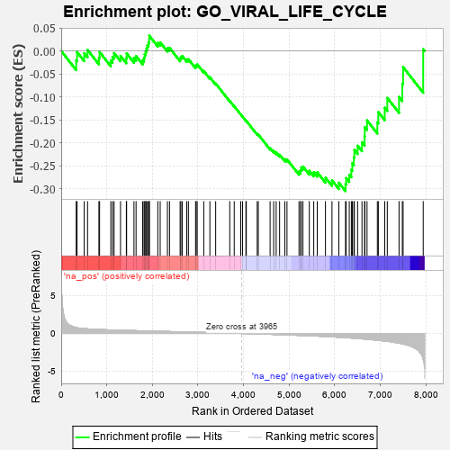
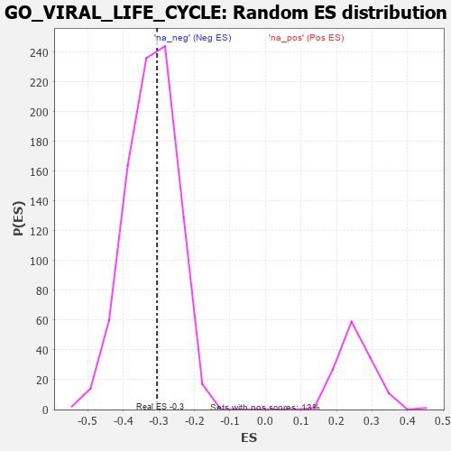

| | | Dataset | 7d |
| Phenotype | NoPhenotypeAvailable |
| Upregulated in class | na_neg |
| GeneSet | GO_VIRAL_LIFE_CYCLE |
| Enrichment Score (ES) | -0.30514517 |
| Normalized Enrichment Score (NES) | -0.94732195 |
| Nominal p-value | 0.5681293 |
| FDR q-value | 0.91124797 |
| FWER p-Value | 1.0 |
Table: GSEA Results Summary

Fig 1: Enrichment plot: GO_VIRAL_LIFE_CYCLE
Profile of the Running ES Score & Positions of GeneSet Members on the Rank Ordered List
| PROBE | GENE SYMBOL | GENE_TITLE | RANK IN GENE LIST | RANK METRIC SCORE | RUNNING ES | CORE ENRICHMENT | | 1 | NUP85 | | | 329 | 0.772 | -0.0206 | No |
| 2 | CNOT7 | | | 348 | 0.750 | -0.0024 | No |
| 3 | NUP54 | | | 505 | 0.627 | -0.0050 | No |
| 4 | MX1 | | | 578 | 0.604 | 0.0023 | No |
| 5 | RAE1 | | | 827 | 0.524 | -0.0148 | No |
| 6 | PPIE | | | 842 | 0.521 | -0.0023 | No |
| 7 | DEK | | | 1088 | 0.466 | -0.0206 | No |
| 8 | NUP93 | | | 1127 | 0.459 | -0.0129 | No |
| 9 | NUP43 | | | 1160 | 0.453 | -0.0046 | No |
| 10 | FKBP6 | | | 1301 | 0.428 | -0.0107 | No |
| 11 | NUP88 | | | 1429 | 0.404 | -0.0157 | No |
| 12 | CHMP7 | | | 1435 | 0.403 | -0.0054 | No |
| 13 | CCNK | | | 1596 | 0.374 | -0.0154 | No |
| 14 | DDB1 | | | 1642 | 0.366 | -0.0111 | No |
| 15 | NUP58 | | | 1787 | 0.340 | -0.0201 | No |
| 16 | FMR1 | | | 1816 | 0.334 | -0.0145 | No |
| 17 | UVRAG | | | 1831 | 0.332 | -0.0073 | No |
| 18 | TRIM5 | | | 1852 | 0.327 | -0.0008 | No |
| 19 | NUP62 | | | 1871 | 0.324 | 0.0057 | No |
| 20 | PC | | | 1891 | 0.321 | 0.0121 | No |
| 21 | DDX6 | | | 1915 | 0.318 | 0.0179 | No |
| 22 | TASOR | | | 1931 | 0.316 | 0.0246 | No |
| 23 | HACD3 | | | 1932 | 0.315 | 0.0332 | No |
| 24 | SNF8 | | | 2119 | 0.288 | 0.0175 | No |
| 25 | MORC2 | | | 2171 | 0.281 | 0.0187 | No |
| 26 | SEC13 | | | 2330 | 0.256 | 0.0057 | No |
| 27 | PPID | | | 2376 | 0.249 | 0.0068 | No |
| 28 | PDE12 | | | 2608 | 0.211 | -0.0168 | No |
| 29 | NUP50 | | | 2625 | 0.209 | -0.0131 | No |
| 30 | VPS4A | | | 2654 | 0.205 | -0.0110 | No |
| 31 | PPIA | | | 2754 | 0.190 | -0.0184 | No |
| 32 | PPIH | | | 2790 | 0.184 | -0.0178 | No |
| 33 | NMT2 | | | 2947 | 0.158 | -0.0332 | No |
| 34 | XPO1 | | | 2960 | 0.156 | -0.0305 | No |
| 35 | PCSK5 | | | 2983 | 0.152 | -0.0292 | No |
| 36 | WWP1 | | | 3127 | 0.133 | -0.0436 | No |
| 37 | NUP98 | | | 3261 | 0.112 | -0.0574 | No |
| 38 | DDX3X | | | 3388 | 0.091 | -0.0709 | No |
| 39 | VTA1 | | | 3697 | 0.043 | -0.1088 | No |
| 40 | SPCS1 | | | 3795 | 0.028 | -0.1203 | No |
| 41 | TOP2B | | | 3938 | 0.005 | -0.1382 | No |
| 42 | CHMP6 | | | 3977 | -0.003 | -0.1429 | No |
| 43 | ATG5 | | | 4051 | -0.016 | -0.1517 | No |
| 44 | PKN2 | | | 4060 | -0.017 | -0.1523 | No |
| 45 | RAN | | | 4299 | -0.059 | -0.1808 | No |
| 46 | CTBP1 | | | 4323 | -0.064 | -0.1820 | No |
| 47 | VPS28 | | | 4582 | -0.114 | -0.2116 | No |
| 48 | CHMP3 | | | 4660 | -0.129 | -0.2178 | No |
| 49 | PI4KA | | | 4715 | -0.143 | -0.2207 | No |
| 50 | SRPK2 | | | 4790 | -0.155 | -0.2259 | No |
| 51 | VAMP8 | | | 4905 | -0.179 | -0.2354 | No |
| 52 | CHMP5 | | | 4952 | -0.188 | -0.2361 | No |
| 53 | TOP2A | | | 5216 | -0.250 | -0.2626 | No |
| 54 | IDE | | | 5252 | -0.258 | -0.2600 | No |
| 55 | CDK1 | | | 5264 | -0.262 | -0.2543 | No |
| 56 | RAB7A | | | 5302 | -0.271 | -0.2516 | No |
| 57 | IST1 | | | 5442 | -0.305 | -0.2609 | No |
| 58 | PCBP2 | | | 5539 | -0.331 | -0.2640 | No |
| 59 | LARP1 | | | 5616 | -0.349 | -0.2641 | No |
| 60 | LAMP1 | | | 5796 | -0.404 | -0.2758 | No |
| 61 | VAPA | | | 5939 | -0.449 | -0.2815 | No |
| 62 | UBB | | | 6090 | -0.503 | -0.2868 | No |
| 63 | CDC42 | | | 6236 | -0.548 | -0.2902 | Yes |
| 64 | XPR1 | | | 6250 | -0.555 | -0.2766 | Yes |
| 65 | NCAM1 | | | 6318 | -0.582 | -0.2692 | Yes |
| 66 | NPC1 | | | 6364 | -0.602 | -0.2585 | Yes |
| 67 | ISG15 | | | 6385 | -0.608 | -0.2444 | Yes |
| 68 | RAB43 | | | 6419 | -0.628 | -0.2314 | Yes |
| 69 | EEA1 | | | 6430 | -0.631 | -0.2155 | Yes |
| 70 | DPP4 | | | 6501 | -0.663 | -0.2062 | Yes |
| 71 | TPR | | | 6597 | -0.709 | -0.1989 | Yes |
| 72 | RAB5A | | | 6655 | -0.741 | -0.1859 | Yes |
| 73 | VPS18 | | | 6659 | -0.743 | -0.1659 | Yes |
| 74 | EGFR | | | 6708 | -0.765 | -0.1511 | Yes |
| 75 | SNX3 | | | 6934 | -0.893 | -0.1553 | Yes |
| 76 | FBXL2 | | | 6956 | -0.911 | -0.1331 | Yes |
| 77 | RAB1A | | | 7096 | -0.993 | -0.1236 | Yes |
| 78 | DDX5 | | | 7152 | -1.037 | -0.1022 | Yes |
| 79 | UBC | | | 7410 | -1.274 | -0.1000 | Yes |
| 80 | VAPB | | | 7482 | -1.378 | -0.0713 | Yes |
| 81 | PPIB | | | 7499 | -1.396 | -0.0352 | Yes |
| 82 | MRC1 | | | 7940 | -3.475 | 0.0039 | Yes |
Table: GSEA details [plain text format]

Fig 2: GO_VIRAL_LIFE_CYCLE: Random ES distribution
Gene set null distribution of ES for GO_VIRAL_LIFE_CYCLE